용접산업기사 (2006-05-14 기출문제)
1과목: 용접야금 및 용접설비제도
1. 유황은 강철에 어떤 영향을 주는가?
- 저온인성
- 적열취성
- 저온취성
- 적열인성
(정답률: 80%)

2. 2성분계의 평형 상태도에서 액체, 고체의 어느 상태에서도 일부분 밖에 녹지 않는 형은?
- 공정형
- 포정형
- 편정형
- 전율 고정형
(정답률: 36%)
3. 강의 표면 경화 열처리 방법에 포함되지 않는 것은?
- 화염경화법
- 고주파경화법
- 시안화법
- 오스템퍼링법
(정답률: 57%)
4. 용융 슬래그의 염기도를 나타내는 식은?
- 염기도 = {Σ염기성 성분 / Σ산성 성분}
- 염기도 = {Σ산성 성분 / Σ염기성 성분}
- 염기도 = {Σ용융금속 성분 / Σ용융슬래그 성분}
- 염기도 = {Σ용융슬래그 성분 / Σ용융금속 성분}
(정답률: 62%)
5. 용접부를 어떤 온도 이상으로 가열하면 재질이 연화되어 연성이 증가하고 내부 응력을 제거하며 정상적인 재료의 성질로 회복되는 열처리법은?
- 화염경화법
- 노멀라이징
- 고주파경화법
- 어닐링
(정답률: 46%)
6. 스테인리스강의 종류에서 용접성이 가장 우수한 것은?
- 마텐자이트계 스테인리스 강
- 페라이트계 스테인리스 강
- 오스테나이트계 스테인리스 강
- 펄라이트계 스테인리스 강
(정답률: 84%)
7. 저용융점 합금이란 어떤 원소보다 용융점이 낮은 것을 말하는가?
- Zn
- Cu
- Sn
- Pb
(정답률: 36%)
8. 철의 자기 변태 온도는 다음 중 대략 얼느 정도인가?
- 262℃
- 358℃
- 768℃
- 1160℃
(정답률: 82%)
9. 용융금속의 결정을 미세화시키는 방법이 아닌 것은?
- 자기교반에 의한 방법
- 초음파 진동에 의한 방법
- 실드 가스로 알곤을 사용하는 방법
- 합금원소를 첨가하는 방법
(정답률: 49%)
10. 체심입방격자에 속하는 원자수는 모두 몇 개인가?
- 1개
- 2개
- 4개
- 6개
(정답률: 62%)
11. 서로 120도를 이루는 3개의 기본 축에 물체의 정면, 평면, 측면을 볼 수 있도록 두 개의 옆면 모서리가 수평선과 30도 되게 투상한 것은?
- 제 1 각법
- 등각 투상법
- 사 투상법
- 제 3 각법
(정답률: 78%)
12. 가상선을 이용한 도시에서 대상물의 가공 전의 모양이나 가공 후의 모양 또는 조립 후의 모양을 표시하는 경우에 사용하는 선은?
- 실선
- 은선
- 가는 2점 쇄선
- 가는 1점 쇄선
(정답률: 52%)
13. 도면에서 해칭 (hatching)을 하는 경우는?
- 움직이는 부분을 나타내고자 할 때
- 회전하는 물체를 나타내고자 할 때
- 절단 단면 부분을 나타내고자 할 때
- 이웃하는 부품과의 경계를 나타낼 때
(정답률: 81%)
14. KS 규격에서 회주철을 의미하는 기호는?
- GC100
- SC360
- BMC27
- C1020BE
(정답률: 54%)
15. KS 규격에서 용접부 비파괴시험기호의 설명으로 틀린 것은?
- RT - 방사선 투과 시험
- PT - 침투 탐상 시험
- LT - 누설 시험
- PRT - 변형도 측정 시험
(정답률: 63%)
16. 기계재료 표시방법에서 SF340A에서 340의 표시는 무엇을 나타내는가?
- 강
- 단조품
- 최저인장강도
- 최고인장강도
(정답률: 83%)
17. 치수보조 기호에 대한 용어의 연결이 틀린 것은?
- R - 반지름
- ø- 지름
- SR - 구의 반지름
- C - 치핑
(정답률: 83%)
18. 다음 그림 중에서 용접 기호(이음용접)를 나타내는 부분은?
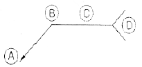
- A
- B
- C
- D
(정답률: 53%)
19. 표준규격(제도규격)을 제정하는 목적을 설명한 것 중에서 틀린 것은?
- 설계자의 의도를 오해 없이 정확하게 전달하기 위하여
- 생산능률을 향상시키고 제품의 호환성 확보를 위하여
- 품질향상에 기여하고 원가를 절감할 수 있도록하기 위하여
- 국제 표준화기구와 다른 나라와의 차이를 두기위하여
(정답률: 81%)
20. 재료 기호 SM 400A에서 재질의 설명으로 옳은 것은?
- 일반 구조용 압연 강재
- 연강 선재
- 용접 구조용 압연 강재
- 열간 압연 연강판
(정답률: 63%)
2과목: 용접구조설계
21. 가용접(tack welding)에 대한 사항 중 틀린 것은?
- 부재 강도상 중요한 장소는 가용접을 피한다.
- 가용접용의 용접봉은 본용접보다 지름이 약간 굵은 것을 사용한다.
- 본 용접 전에 좌우의 홈부분을 잠정적으로 고정하기 위한 짧은 용접이다.
- 가용접은 본용접 못지 않게 중요하다.
(정답률: 86%)
22. 맞대기 용접 이음 홈의 종류가 아닌 것은?
- 양면 J형
- C형
- K형
- H형
(정답률: 77%)
23. 그림과 같이 완전용입 T형 맞대기용접 이음에 굽힘 모멘트 Mb=9000 kgfㆍcm가 작용할 때 최대 굽힘 응력(kgf/cm2)은? (단, L=400mm, L=300mm, t=20mm, P(kgf)는 하중이다.)
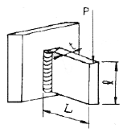
- 30
- 300
- 45
- 450
(정답률: 36%)
24. 재료의 내부에 남아 있는 응력은?
- 좌굴응력
- 변동응력
- 잔류응력
- 공칭응력
(정답률: 86%)
25. 용접에 의한 잔류응력을 가장 적게 받는 것은?
- 정적강도
- 취성파괴
- 피로강도
- 횡 굴곡
(정답률: 42%)
26. 필릿용접에서, 모재가 용접선에 각을 이루는 경우의 변형은?
- 종수축
- 좌굴변형
- 회전변형
- 횡굴곡
(정답률: 39%)
27. 용접에서 수축변형의 종류에 해당 되지 않는 것은?
- 횡굴곡
- 역변형
- 종굴곡
- 좌굴변형
(정답률: 60%)
28. 용착 금속의 인장강도를 구하는 옳은 식은?
- 인장강도 = 인장하중/시험편의 단면적
- 인강강도 = 시험편의 단면적/인장하중
- 인장강도 = 표점거리/연신율
- 인장강도 = 연신율/표점거리
(정답률: 68%)
29. 용접 전 변형량을 대략 예측할 수 있을 때 사용할수 있는 변형 방지법은?
- 역 변형법
- 피닝법
- 냉각법
- 국부 긴장법
(정답률: 77%)
30. 용접 변형의 경감 및 교정방법에서 용접부에 구리로 된 덮개판을 두든지 뒷면에서 용접부를 수냉 또는 용접부 근처에 물끼 있느 석면, 천 등을 두고 모재에 용접입열을 막음으로써 변형을 방지하는 방법은?
- 롤링법
- 피닝법
- 도열법
- 억제법
(정답률: 67%)
31. 용접부의 인장시험에서 최초로 표점 사이의 거리 L0로 하고, 판단 후의 표점 사이의 거리 L1로 하면, 파단까지의 변형율 δ를 구하는 식으로 옳은 것은?
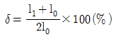
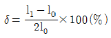
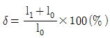
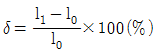
(정답률: 58%)
32. V형 맞대기 용접(완전한 용입)에서 판 두께가 10mm 용접선의 유효길이가 200mm일 때, 여기에 50Kgf/mm2의 인장(압축)응력이 발생한다면 용접선에 직각방향으로 몇 Kgf의 인장(압축)하중이 작용하겠는가?(오류 신고가 접수된 문제입니다. 반드시 정답과 해설을 확인하시기 바랍니다.)
- 2000Kgf
- 5000Kgf
- 10000Kgf
- 15000Kgf
(정답률: 66%)
33. 용접부의 시험법에서 시험편에 V형 또는 U형 등의 노치(notch)를 만들고, 하중을 주어 파단시키는 시험방법은?
- 경도 시험
- 인장 시험
- 굽힘 시험
- 충격 시험
(정답률: 45%)
34. 두께가 6.4mm인 두 모재의 맞대기 이음에서 용접 이음부가 4536 kgf의 인장하중이 작용할 경우 필요한 용접부의 최소 허용길이(mm)는? (단, 용접부의 허용인장응력은 14.06Kg/mm2이다.)
- 50.4
- 40.3
- 30.1
- 20.7
(정답률: 54%)
35. 다음 그림과 같은 필릿이음의 용접부 인장응력(kgf/mm2)은 얼마 정도 인가?
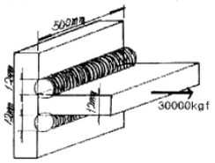
- 약 1.4
- 약 3.5
- 약 5.2
- 약 7.6
(정답률: 41%)
36. 연강의 맞대기 용접 이음에서 용착금속의 인장강도가 40 kgf/mm2, 안전율이 8이면, 이음의 허용응력은?
- 5 kgf/mm2
- 8 kgf/mm2
- 40 kgf/mm2
- 48 kgf/mm2
(정답률: 74%)
37. 연강용 피복 아크 용접봉의 종류가 E4340 이라고 할 때, 이 용접봉의 피복제의 계통은?
- 철분 산화철계
- 철분 저수소계
- 특수계
- 저수소계
(정답률: 74%)
38. 스테인리스 강 (Stainless Steel) 이나 고장력 강의 용접에서 잔류응력에 의해 결정 입계에 따라 발생되는 균열은?
- 응력 부식 균열
- 재열 균열
- 횡 균열
- 종 균열
(정답률: 65%)
39. 용접 선의 양측을 정속으로 이동하는 가스 불꽃에 의하여 나비 약 150mm 에 걸쳐서 150 ~ 200℃로 가열한 다음 곧 수냉하여 주로 용접선 방향의 응력을 제거하는 방법은 무엇인가?
- 피닝법
- 기계적 응력 완화법
- 저온 응력 완화법
- 국부 풀림법
(정답률: 71%)
40. 다음 그림 중 필릿(용접) 겹치기 이음은?
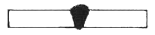
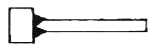
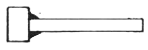
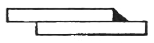
(정답률: 77%)
3과목: 용접일반 및 안전관리
41. 가스절단 되기 위한 조건 중에서 틀린 것은?
- 모재가 산화연소 하는 온도는 그 금속의 용융점보다 높을 것
- 생성된 금속산화물의 용융온도는 모재의 용융온도보다 낮을 것
- 생성된 산화물은 유동성이 좋을 것
- 금속의 화합물 중에 연소되지 않는 물질이 적을 것
(정답률: 41%)
42. 일렉트로 슬래그(Electro slag) 용접은 다음 중 어떤 종류의 열원을 사용하는 것인가?
- 전류의 전기저항열
- 용접봉과 모재 사이에서 발생하는 아크열
- 원자의 분리 융합 과정에서 발생하는 열
- 점화제의 화학반응에 의한 열
(정답률: 62%)
43. 주로 상하부재의 접합을 위하여 한편의 부재에 구멍을 뚫어, 이 구멍 부분을 채우는 형태의 용접방법은?
- 필릿 용접
- 맞대기 용접
- 플러그 용접
- 플래시 용접
(정답률: 83%)
44. 다음 중 가장 높은 열을 발생시킬 수 있는 용접 방법은?
- 테르밋 용접
- 엘렉트로 슬랙 용접
- 플라즈마 용접
- 원자수소 용접
(정답률: 50%)
45. 아크 용접시, 감전 방지에 관한 내용 중 틀린 것은?
- 비가 내리는 날이나 습도가 높은 날에는 특히 감전에 주의를 하여야 한다.
- 전격방지 장치는 매일 점검하지 않으면 안된다.
- 홀더의 절연상태가 충분하면 전격방지 장치는 필요 없다.
- 용접기의 내부에 함부로 손을 대지 않는다.
(정답률: 84%)
46. 보기와 같은 아크 용접봉이 있다. 용접봉의 지름은 얼마인가?
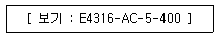
- 5mm
- 43mm
- 400mm
- 16mm
(정답률: 76%)
47. 다음 중 용접기를 설치해서는 안되는 장소는?
- 진동이나 충격이 없는 장소
- 휘발성 가스가 있는 장소
- 기름이나 증기가 없는 장소
- 주위온도가 -5℃인 장소
(정답률: 81%)
48. 용접기의 보수 및 점검시 지켜야 할 사항으로 틀린 것은?
- 2차측 단자의 한쪽과 용접기 케이스는 접지해서는 안된다.
- 가종부분 냉각팬을 점검하고 주유해야 한다.
- 탭 전환의 전기적 접속부는 자주 샌드페이퍼 등으로 잘 닦아준다.
- 용접 케이블 등의 파손된 부분은 절연 테이프로 감아야 한다.
(정답률: 64%)
49. 용접 피복제의 성분 중 아크안정제의 역할을 하는 것은?
- 알루미늄
- 마그네슘
- 니켈
- 석회석
(정답률: 64%)
50. 가스용접 작업에 필요한 보호구에 대한 설명 중 틀린 것은?
- 보호안경은 적외선, 자외선, 강렬한 가시광선과 비산되는 불꽃에서 눈을 보호한다.
- 보호장갑은 화상방지를 위하여 꼭 착용한다.
- 앞치마와 팔덮개 등은 착용하면 작업하기에 힘이 들기 때문에 착용하지 않아도 된다.
- 유해가스가 발생할 염려가 있을 때에는 방독면을 착용 한다.
(정답률: 86%)
51. 아크용접에서 피복제의 주요작용으로 가장 알맞은 설명은?
- 용착금속의 함금 원소 제거
- 용융점이 높은 적당한 점성의 무거운 슬랙생성
- 용착금속의 탈산 정련작용
- 용착금속의 응고와 냉각속도 증가
(정답률: 63%)
52. 직류아크 용접기의 장점이 아닌 것은?
- 아크쏠림의 방지가 가능하다.
- 감전의 위험이 적다.
- 아크가 안정하다.
- 극성의 변화가 가능하다.
(정답률: 49%)
53. 피복 아크 용접에서 직류정극성의 설명으로 틀린 것은?
- 모재를 +극에, 용접봉을 -극에 연결한다.
- 모재의 용입이 얕아진다.
- 두꺼운 판의 용접에 적합하다.
- 용접봉의 용융이 늦다.
(정답률: 63%)
54. 경납땜에서 갖추어야 할 조건으로 틀린 것은?
- 기계적, 물리적, 화학적 성질이 좋아야 한다.
- 접합이 튼튼하고 모재와 친화력이 없어야 한다.
- 모재와 야금적 반응이 만족스러워야 한다.
- 모재와의 전위차가 가능한 한 적어야 한다.
(정답률: 73%)
55. CO2 가스로 충전된 CO2 가스 용량은 무엇으로 나타내는가?
- CO2 가스 조정기의 압력
- 용기 내의 가스 중량
- 충전 전의 용기 중량
- 충전 후의 용기 중량
(정답률: 52%)
56. 이음부의 겹침을 판 두께 정도로 하고 겹쳐진 폭 전체를 가압하여 심 용접을 하는 방법은?
- 매시 심용접 (mash seam welding)
- 포일 심용접 (foil seam welding)
- 맞대기 심용접 (butt seam welding)
- 인터랙 심용접 (interact seam welding)
(정답률: 45%)
57. 용접부에 외부에서 주어지는 열량을 용접입열이라고 한다. 피복아크 용접에서 아크가 용접의 단위 길이 1cm 당 발생하는 전기적 에너지 H는 아크전압 E(Volt), 아크 전류 I(ampere), 용접속도 V(cm/min)라 할 때, 어떤 관계식으로 주어지는가?
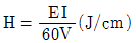
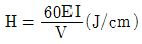
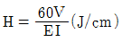
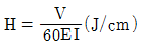
(정답률: 64%)
58. 아크용접 중 방독마스크를 쓰지 않아도 되는 용접 재료는?
- 주강
- 황동
- 아연도금판
- 카드뮴합금
(정답률: 60%)
59. 가스용접 및 가스절단에 사용되는 가연성 가스의 요구되는 성질 중 틀린 것은?
- 불꽃의 온도가 높을 것
- 발열량이 클 것
- 연소속도가 느릴 것
- 용융금속과 화학반응을 일으키지 않을 것
(정답률: 76%)
60. 유니온멜트 용접 또는 케네디 용접이라고 부르기도 하며 용제(flux)를 사용하는 용접법은?
- 서브머지드 용접
- 불활성가스 용접
- 원자수소 용접
- CO2가스 용접
(정답률: 65%)